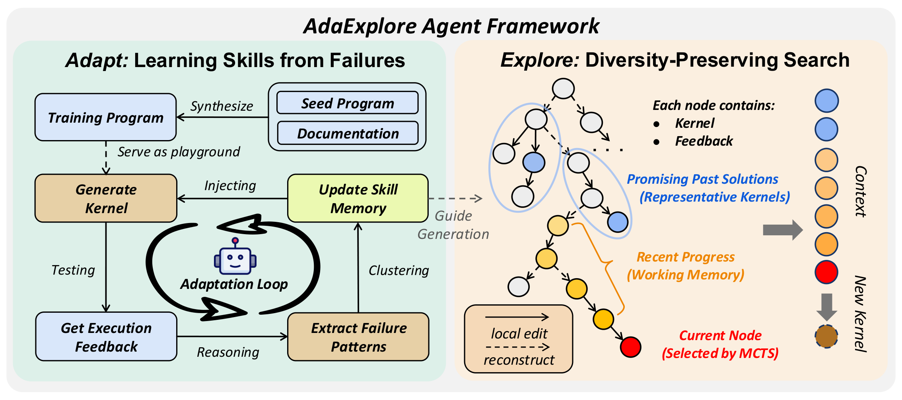
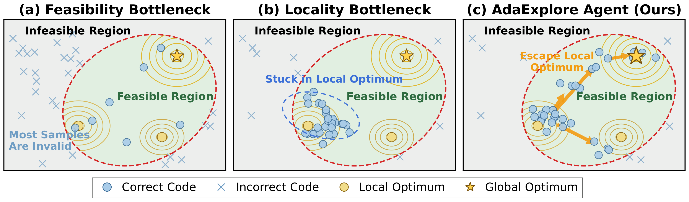
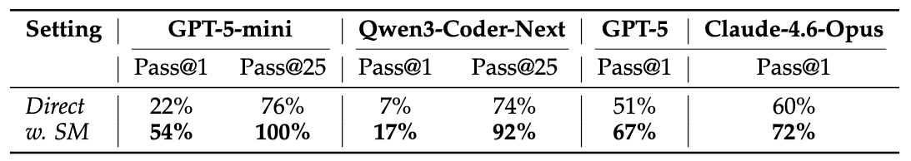
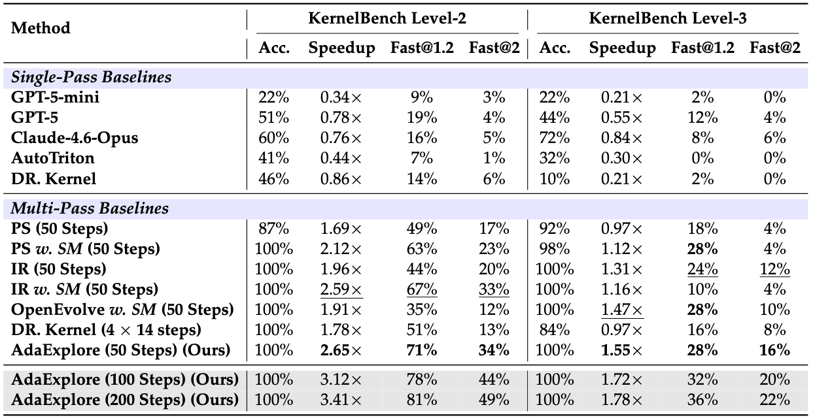

AdaExplore is an LLM agent for GPU kernel generation with a two-stage pipeline: failure-driven adaptation that distills past failures into reusable rules, and diversity-preserving search that maintains multiple kernel candidates in parallel. Together they improve both correctness and speedup without any fine-tuning or external knowledge.
Kernel generation is hard for LLMs for two reasons. First, correctness has a sharp feasibility boundary: even small mistakes in syntax, memory access, or parallelization often cause compilation failures or runtime errors. Kernel generation is also underrepresented in LLM pretraining data, so models tend to repeat the same mistakes across tasks instead of learning from them. Second, performance lives on a rugged optimization landscape: meaningful speedups usually require coordinated structural changes, such as different tiling, parallelization, or fusion strategies, rather than small local edits. A search that only patches the current best often gets trapped in a weak strategy, while a search that only regenerates from scratch never fully refines promising candidates.

AdaExplore addresses both challenges directly. The Adapt stage builds a cross-task memory of recurring failures, helping the agent avoid mistakes it has already seen. The Explore stage runs a tree search that alternates between small steps for local refinement and large steps for structural regeneration, while keeping multiple promising branches alive in parallel. Together, these two stages handle both the sharp feasibility boundary and the highly non-linear performance landscape.
The agent is first run on a few hundred synthesized kernel-style tasks. Each compilation or runtime failure is summarized by an LLM into a minimal "you cannot..." rule, near-duplicates are merged by an LLM judge, and only rules that recur across multiple independent failures are kept. The result is a compact skill memory that is injected into every proposal prompt during search, so the agent stops repeating mistakes it has already encountered.
For example, a synthesized hardswish kernel produced the
following error:
x = tl.load(X_ptr + offs, mask=mask, other=tl.float32(0.0))
^
TypeError: 'dtype' object is not callableThe Adapt pipeline distilled this failure into a single rule that was added to the cross-task skill memory:
You cannot call tl.float32 as a function inside a Triton kernel.Once distilled, the rule stays in memory as a single line and helps prevent the same mistake in future kernels.
The Explore stage organizes candidate kernels into an MCTS search tree. Small steps refine the current best locally while keeping the recent refinement chain in working memory. Occasionally, large steps regenerate the kernel from scratch, seeded by a representative kernel from the pool, to escape local minima.
The figure below shows several concrete Explore trajectories augmented with the learned skill memory.
Caveat: "correctness" here means passing KernelBench's randomized
numerical-tolerance check (atol=rtol=5e-2 over five
trials). The kernels shown are not formally verified and may not be safe
to drop into production without further testing.
Both stages of AdaExplore deliver measurable gains on KernelBench: Adapt raises pass@1 correctness for every base model we tested, and Explore produces faster final kernels than the search baselines we compared against.
The Adapt stage turns repeated failures into reusable rules and feeds
them back into every future proposal. The figure below compares each
base model's pass@1 correctness with its own skill memory enabled
(w. SM) against direct generation (Direct).
Every model we tested sees a substantial correctness gain after building
a skill memory.

Given a fixed per-problem search budget, Explore finds substantially faster kernels than prior search baselines by maintaining multiple candidate branches and alternating between local refinement (small steps) and structural rewrites (large steps).
